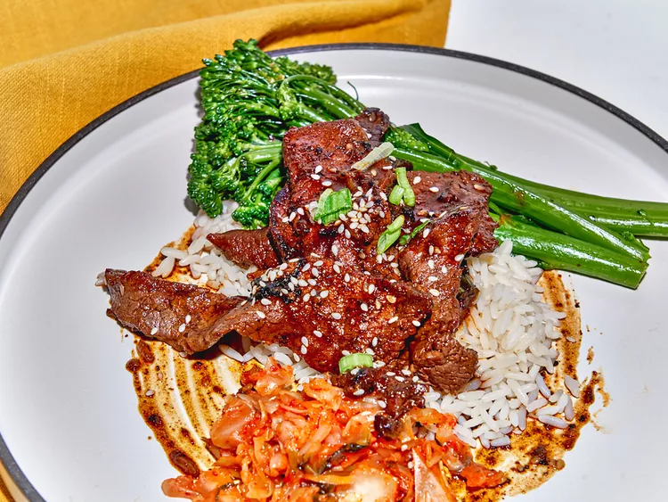

Tri-Tip Bulgogi
Home

Description
A signature dish of the Korean culinary world.
A protein of choice plus with a few seasonings sauce
will bring out the maximum umami flavor with a
taste of grilled protein.
Ingredients
"Steps"
-
Combine pear, onion, sugar, sauces in the blender
and blend until smooth.
-
Slice your choice of protein.
-
Add grapseed oil to a skillet over medium-high heat.
-
Add gochujang, rice vinegar, soy sauce, and 1/2 cup of
water to the skillet.
-
Remove bulgogi from heat, and drizzle with sesame oil.
-
Plate bulgoi with rice, kimchi, and steam veggies.